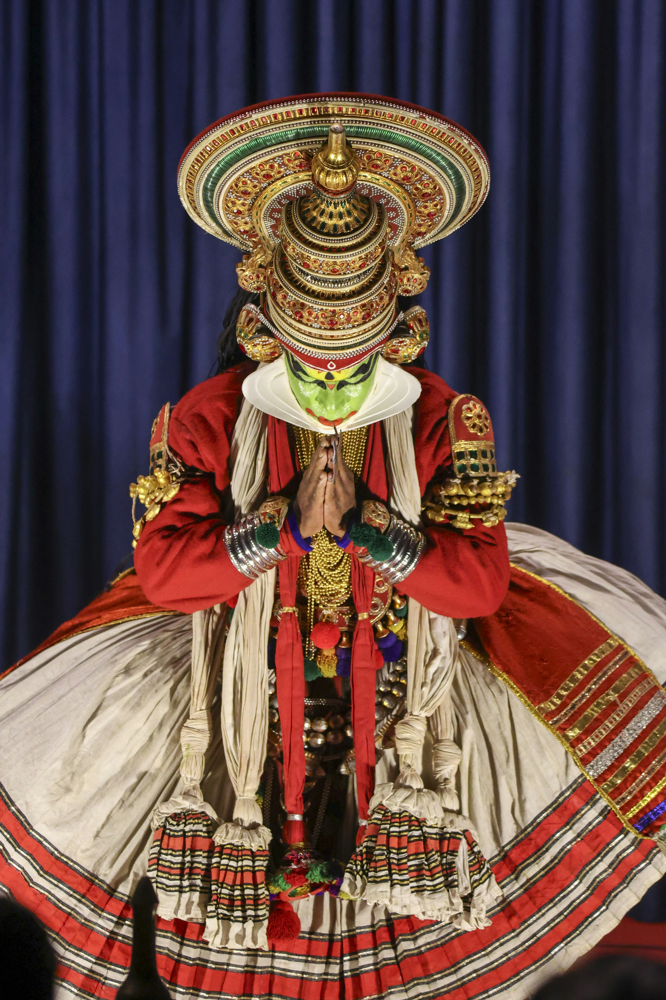

An Evening of Transcendent Grace
The Seraphim Dance Theatre
Prepare to be mesmerized by The Seraphim Dance Theatre, a company
whispered about in awe in ballet circles worldwide. Founded three
decades ago under the visionary direction of the enigmatic Madame
Evgenia Petrova, the Seraphim Theatre redefined contemporary
ballet by seamlessly weaving classical precision with raw,
emotional modern narratives. They are legendary for their athletic
grace, impossibly fluid ensemble work, and visually stunning
productions that explore the depths of human experience. Their
signature work, "Echoes of Starlight," earned them the prestigious
Grand Prix de Danse and cemented their place in dance history. For
their exclusive engagement at the New York Event Center, the
company presented a breathtaking program featuring excerpts from
their most celebrated repertoire, including the powerful pas de
deux from "Crimson Requiem" and the New York premiere of their
latest critically acclaimed piece, "Ephemeral Dreams." It was an
unforgettable night celebrating the pinnacle of choreographic
artistry.

Apex Tha Prophet
The Veritas World Tour
The New York Event Center stage ignited with the lyrical fire of
Apex Tha Prophet, a defining voice of his generation. Hailing from
the inner city, Apex rose from underground poetry slams to global
superstardom on the strength of his razor-sharp intellect, complex
rhyme schemes, and unflinching social commentary. His legacy is
built on albums that are less records, more cultural documents –
challenging norms, chronicling struggles, and ultimately, seeking
truth. Fresh off the release of his groundbreaking, multi-platinum
album, "Chronicles of Tomorrow," Apex brought The Veritas World
Tour to our venue. This wasn't just a concert; it was a
declaration. Backed by a phenomenal live band, he performed
towering anthems and introspective deep cuts from his new album
and celebrated catalog, delivering a masterclass in hip-hop
performance that was both electrifying and profoundly
thought-provoking.

Rhythms of the Azure Isles
The Mana Tapestry Dancers
Audiences were swept away to a world of vibrant color, pulsating
rhythms, and captivating storytelling with The Mana Tapestry
Dancers. Originating from the small, culturally rich (fictional)
Pakura Atoll in the South Pacific, this collective began as a
community effort to preserve ancestral dances passed down through
generations. Under the guidance of elder Leilani Kai, they began
weaving these ancient movements with contemporary influences,
creating a unique and exhilarating style. Their electrifying
performance at the International Festival of Arts caught the
world's attention, launching them onto the global stage. Renowned
for their intricate formations, expressive storytelling through
movement, and stunning, handcrafted costumes adorned with shells
and feathers, the Mana Tapestry Dancers presented "Whispers of the
Ocean," a breathtaking spectacle that celebrated their heritage,
resilience, and the universal language of dance. It was a vibrant,
joyous, and unforgettable cultural journey.

A Night with the Masters: Mozart & Tchaikovsky
Maestro Julian Vance featuring Isabella Moreau
Classical music aficionados experienced an evening of sublime
artistry with Maestro Julian Vance, one of New York's most
respected conductors. A Juilliard alumnus and frequent guest
conductor for the New York Philharmonic, Maestro Vance is renowned
for his insightful interpretations and passionate command of the
orchestra, particularly works from the Classical and Romantic
eras. For this special concert, the stage was graced by the
luminous presence of internationally acclaimed soprano Isabella
Moreau, whose voice has captivated audiences in opera houses from
Milan to Vienna. Together, they guided the orchestra through a
magnificent program dedicated to two titans of classical music:
Wolfgang Amadeus Mozart and Pyotr Ilyich Tchaikovsky. The evening
featured selections including Mozart's soaring arias, perfectly
rendered by Moreau, and the dramatic intensity of Tchaikovsky's
symphonic movements. It was a night of pure elegance and musical
brilliance within the acoustically superb setting of the New York
Event Center.